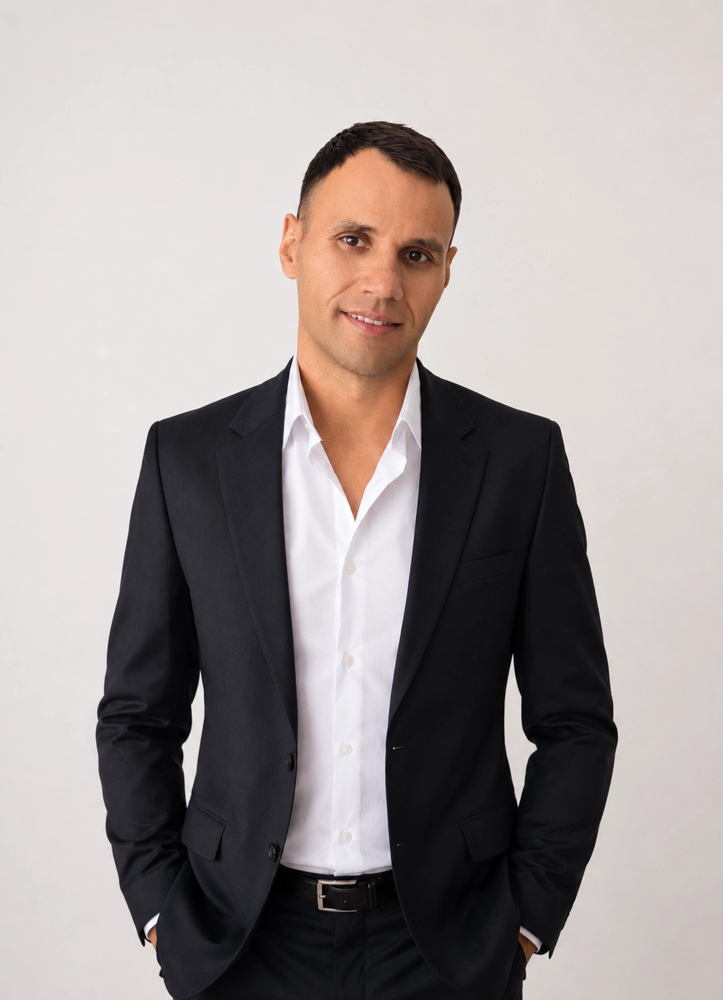

Финансовый консультант
Руслан
Насреддинов
Помогаю инвесторам и экспатам выстроить финансовую систему, принять взвешенные решения по зарубежным инвестициям, криптовалютам и DeFi.
Без обещаний гарантированной доходности. Только индивидуальный подход и стратегия под вашу ситуацию.

Индивидуальный подход
Почему люди обращаются за персональной консультацией,
если существует ChatGPT?
Сегодня получить информацию легко. Гораздо сложнее понять, какие решения подходят именно вам.
Не универсальные советы, а рекомендации с учётом вашей финансовой ситуации, целей, опыта, страны проживания и структуры капитала.
За годы работы я разбирал множество похожих ситуаций и могу обратить внимание на детали, которые часто остаются незаметными.
В инвестициях и криптовалютах одна ошибка может стоить значительно дороже стоимости консультации. Моя задача — помочь снизить вероятность таких ошибок.
Не существует универсального инвестиционного решения. Стратегия всегда строится вокруг ваших целей, горизонта и отношения к риску.
Консультация не заканчивается ответом на вопрос. При необходимости мы вместе доводим решение до результата и корректируем его по мере необходимости.
Направления работы
Чем я могу помочь
- Interactive Brokers
- ETF и индексные фонды
- Долгосрочные портфели
- Диверсификация активов
- Снижение рисков
- Покупка и продажа
- Выбор биржи
- Безопасное хранение
- Аппаратные кошельки
- Переводы между странами
- Стейблкоины
- Лендинговые протоколы
- Доходные стратегии
- Снижение рисков
- Построение DeFi-портфеля
- Финансовая архитектура
- Структура капитала
- Резервный фонд
- Защита накоплений
С чем обычно приходят
Узнайте себя
- — «Хочу инвестировать, но не понимаю, с чего начать.»
- — «Уже есть портфель, но не уверен, что он собран правильно.»
- — «Есть криптовалюта, но боюсь хранить её неправильно.»
- — «Переехал за границу и хочу выстроить финансовую систему.»
- — «Хочу использовать DeFi, но не понимаю реальные риски.»
- — «Нужно перевести капитал между странами безопасным способом.»
Специализация
Финансовая инфраструктура
для жизни за рубежом
Международные переводы, криптовалюты, зарубежные брокеры, диверсификация активов и финансовая архитектура для экспатов и международных инвесторов.
Обсудить вашу ситуациюОбо мне
Экспертиза,
основанная на практике
Более 10 лет изучаю и применяю инвестиционные стратегии на традиционных и криптовалютных рынках.
Специализируюсь на международных инвестициях, криптовалютах и DeFi — областях, в которых большинство финансовых консультантов имеют ограниченную экспертизу.
Помогаю клиентам принимать более взвешенные финансовые решения — без давления, без обещаний и без маркетинговых штампов.
Результат
Что вы получаете
после консультации
Мы структурируем вашу ситуацию и определим, какие действия действительно имеют смысл именно сейчас.
Вы получите понятную финансовую архитектуру вместо набора разрозненных инструментов. Цель — чтобы инвестиции, криптовалюты, брокеры и хранение капитала работали как единая система.
Вместо месяцев самостоятельного поиска вы получите практический план действий и понимание возможных рисков.
Принцип работы
Консультация — это не лекция
Моя задача — не рассказать всё, что я знаю. Моя задача — помочь вам принять правильное решение.
Во время консультации мы не изучаем теорию ради теории. Мы разбираем именно вашу ситуацию, оцениваем возможные варианты и выбираем наиболее подходящий путь.
Каждая консультация строится вокруг ваших вопросов, а не заранее подготовленного сценария.
Меньше информации — больше ясности.
Не теория — а практические решения.
Не универсальные советы — а стратегия именно для вашей ситуации.
Форматы работы
Как мы можем
работать вместе
Детальный анализ вашей ситуации и поиск практических решений с индивидуальным подходом.
Анализ инвестиционного или криптопортфеля: структура, риски, возможности для улучшения системы.
Системная работа над финансовой стратегией — от анализа ситуации до принятия решений.
Отзывы
Что говорят клиенты
"Руслан помог выстроить понятную финансовую систему — зарубежный брокер, криптовалюта, резервный фонд. Впервые всё стало на своё место."
"Разобрался с DeFi без воды и хайпа. Теперь понимаю реальные риски и знаю, какая стратегия подходит именно мне."
"Помог решить вопрос с переводом капитала и выбором надёжного хранения. Никакого давления — только анализ и конкретные решения."
Материалы
Полезные материалы
Крипто
Как выбрать аппаратный кошелёк
→DeFi
Основы DeFi: риски и стратегии
→Инвестиции
Как устроены ETF
→Брокеры
Interactive Brokers для международных инвесторов
→Анализ
Ошибки при формировании инвестиционного портфеля
→Начать
Обсудим
вашу ситуацию
Если вам нужна помощь с инвестициями, криптовалютами, DeFi или международными финансами — напишите в Telegram.
Написать в Telegram